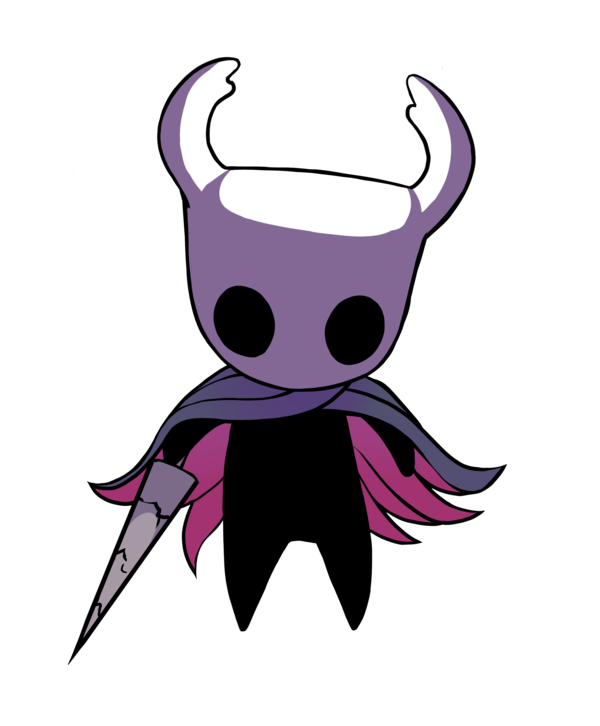

O Knight é um Receptáculo. Ele é filho do Rei Pálido e da Dama Branca, nascido em o Abismo com Vazio dentro de sua carapaça. Hornet é irmã do Cavaleiro por meio de seu pai comum. Como o restante de seus irmãos Vasos, o Cavaleiro não tem gênero.